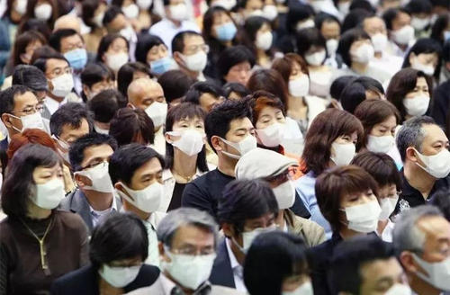

每年11月至次年3月是流感高发期，中国疾控中心首席科学家曾光在2020中国抗病毒药物创新大会上说：“要警惕今冬明春新冠肺炎疫情与流感叠加感染。”
气温降低有利于新冠、流感等病毒的存活和传播，今年秋冬季新冠肺炎疫情与流感等呼吸道传染病存在叠加流行的风险。这会有什么影响？怎么防范？湖南省疾病预防控制中心应急办主任、主任医师刘富强进行了详细答疑。
1 “新冠”和流感均为病毒性感染 存在叠加感染的风险
11月7日就是立冬了，不少人担心随着气温下降，流感和新冠肺炎会叠加感染，也有人担心流感被误诊为新冠肺炎。
“流感是一种病毒性感染，多为甲型或者乙型流感病毒感染，临床上会出现发热、畏寒、全身肌肉酸痛等症状，血常规会提示白细胞正常或者偏低、淋巴细胞数下降，重症流感胸部CT可出现磨玻璃阴影。”刘富强表示，按照《新型冠状病毒肺炎诊疗方案（试行第八版）》，上述流感症状，某种程度上与新冠肺炎疑似病例标准“吻合”。
不过，患流感的人往往发病急、症状严重，尤其是全身症状多，会发热，可能在发病一两天内体温就会上升到39～40摄氏度，头痛、肌肉乏力、食欲下降等症状明显，对于老年人、孩子、肥胖人士、孕妇或有基础病等人群，流感可以导致非常严重的重症肺炎，甚至死亡。而普通新冠肺炎患者会出现低烧、咳嗽、畏寒等症状，早期症状较轻，但到了一周左右时病情会逐渐加重，发展到肺炎甚至重症肺炎。所以，典型的新冠肺炎病毒感染的病例，病情有一个逐步加重的过程；而一些重症患者会出现呼吸加快、呼吸衰竭甚至多脏器损害的症状。
中国工程院院士钟南山在接受媒体采访时表示，在今年的疫情中，已发现一些新冠肺炎与流感共同感染的案例。现在的重点是加强鉴别流感与新冠肺炎，以增强治疗的针对性。
专家表示，一旦出现发热、咳嗽等呼吸道传染病症状，入院都要进行核酸检测，通过胸部CT和核酸检测能够相对有效鉴别两种病毒引起的肺炎，进行下一步对症治疗。
2 接种疫苗是最好的保护方式
刘富强透露，目前省疾控中心已经在申请新冠疫苗的接种方案。“正在做的就是向国家申请新冠疫苗紧急使用的一个方案。按照国家联防联控机制发布的消息，湖南省到今年底或明年初可以开展新冠疫苗的紧急接种。”在新冠疫苗尚未获批上市之前，他建议市民接种流感疫苗，做好个人健康防护，以免形成新冠肺炎与流感叠加感染。
哪类人群容易叠加感染？刘富强表示，老年人及有慢性基础疾病、免疫抑制的病人更容易叠加感染，这些患者在被新冠肺炎或者流感侵袭以后，免疫功能进一步下降，易感性增加，合并其他呼吸道病毒、细菌、真菌感染的风险和概率明显增加。当然，在感染流感病毒的基础上也可合并感染新冠病毒。因此，要做好相应的防范和准备。
而接种流感疫苗是最有效、最经济的预防流感的方式。世界卫生组织的数据显示，如果流感疫苗的抗原与流行的病毒吻合，流感疫苗对65岁以下健康人群提供的保护为70%至90%。相关医学实验证明，即使疫苗病毒株和流行病毒株不匹配，疫苗的保护效力仍有50%至77%，预防流感相关死亡率的保护率达80%。
刘富强说，预防大于治疗，预防疾病永远要跑在病毒之前。因此，≥6月龄且无禁忌症的人群均可接种流感疫苗，这些人群更是优先接种流感疫苗的对象：医务人员包括临床救治人员、公共卫生人员、卫生检疫人员等；养老机构、长期护理机构、福利院等人群聚集场所脆弱人群及员工；重点场所人群，如托幼机构、中小学校的教师和学生，监所机构的在押人员及工作人员等；其他流感高风险人群，包括60岁及以上的居家老年人、6月龄至5岁儿童、慢性病患者、6月龄以下婴儿的家庭成员和看护人员、孕妇或准备在流感季节怀孕的女性等。
3 做好个人防护，保持社交距离、戴口罩、勤洗手
刘富强建议，除接种流感疫苗外，市民要继续注意做好个人防护，正确规范地佩戴口罩。
比如，养成良好的卫生习惯，不随地吐痰，打喷嚏或咳嗽时用纸巾或肘部遮住口鼻；分泌物或吐痰时用纸巾包好，弃置于垃圾箱内；勤洗手，接触污染环境、餐前便后、咳嗽或打喷嚏之后等情况都要洗手，同时要保持环境清洁、保持室内空气流通。
市民饮食作息要规律，要保证睡眠充足、饮食均衡；及时添衣，注意防寒保暖；坚持适量运动，增强体质和免疫力，这对预防其他疾病也非常有效。
保持社交距离，乘坐地铁、出租车、公交车等公共交通工具要戴口罩；避免去人群聚集场所，前往公共场所要保持1米以上安全社交距离，科学、规范佩戴口罩。尤其是老年人、孕妇、儿童、慢性病患者等人群，要尽量减少前往人群密集的场所，降低感染的风险。
注意饮食卫生，对于冷冻食品，购买回家后，可用75%酒精对冷冻食品包装表面进行消毒。加工时做到生熟分开、煮熟煮透，使用公筷公勺，确保食品安全。
刘富强强调，防控新冠肺炎疫情不麻痹、不厌战、不松劲，要进一步提高认识，增强提高防疫的自觉性，外出时积极配合使用居民健康码，在电影院、博物馆、商超、公交、电梯、地铁等人员密集和密闭空间主动佩戴口罩。良好的卫生习惯不仅有助于市民防控新冠肺炎疫情，而且有助于市民预防流感等传染病。一旦出现发热、咳嗽等呼吸道传染病有关症状，应全程佩戴口罩及时就医。
 关注湖南文化产业网微信公众号
关注湖南文化产业网微信公众号湖南文化产业网(www.hnci.net.cn)版权所有 (c) All Rights Reserved.
未经湖南文化产业网书面特别授权，请勿转载或建立镜像